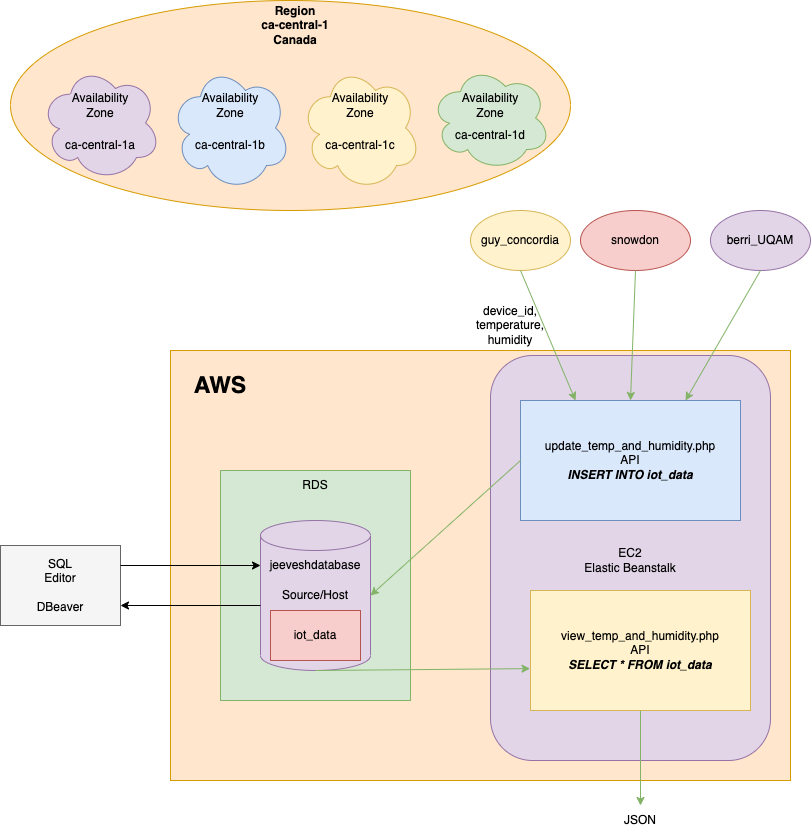

List of APIs:
if(isset($_GET['device_id']) && isset($_GET['temperature']) && isset($_GET['humidity']))
{
if(!empty($_GET['device_id']) && !empty($_GET['temperature']) && !empty($_GET['humidity'])){
$host = ""; // Endpoint of RDS from AWS
$user_name = "vanier_database"; //Username for the RDS Database Server
$password = "master_paasword_vanier_db"; // Password for the RDS Database Server
$database = "Vanier_Web_Service"; // Database name for the RDS Database Server
$connect = mysqli_connect($host, $user_name, $password, $database);
if($connect){
$device_id = $_GET['device_id']; //Parameter
$temperature = $_GET['temperature']; //Parameter
$humidity = $_GET['humidity']; //Parameter
$sql = "INSERT INTO iot_data VALUES (NULL, '$device_id',$temperature,$humidity)"; //Preparing the MySQL Query from the parameters
$query = mysqli_query($connect, $sql); //Executing the MySQL Query
if($query){
$output = array("status" => "Success", "description" => "Data inserted successfully");
echo json_encode($output);
}
else{
$output = array("status" => "Error", "error_description" => "Insertion Error");
echo json_encode($output);
}
}
else{
$output = array("status" => "Error", "error_description" => "Connection Error");
echo json_encode($output);
}
}
else{
$output = array("status" => "Error", "error_description" => "Empty Parameters", "solution" => "Please pass the 3 GET Non-Empty parameters required for this API!");
echo json_encode($output);
}
}
else{
$output = array("status" => "Error", "error_description" => "Missing Parameters", "solution" => "Please pass the 3 GET parameters required for this API!");
echo json_encode($output);
}
Code:
$host = ""; // Endpoint of RDS from AWS
$user_name = "vanier_database"; //Username for the RDS Database Server
$password = "master_paasword_vanier_db"; // Password for the RDS Database Server
$database = "Vanier_Web_Service"; // Database name for the RDS Database Server
$connect = mysqli_connect($host, $user_name, $password, $database);
if($connect){
$sql = "SELECT * FROM iot_data"; // Creating the SQL Query to execute
$query = mysqli_query($connect, $sql); // Executing the SQL Query
$all_rows = array();
while($row = mysqli_fetch_assoc($query)){ //Processing the result from SQL
//print_r($row); //This line can be used to look at the raw array
$row_object = array(
"data_id" => $row['data_id'],
"device_id" => $row['device_id'],
"temperature" => $row['temperature'],
"humidity" => $row['humidity'],
);
array_push($all_rows, $row_object);
}
echo json_encode($all_rows);
}
else{
$output = array("status" => "Error", "error_description" => "Connection Error");
echo json_encode($output);
}
Working of the IoT API
